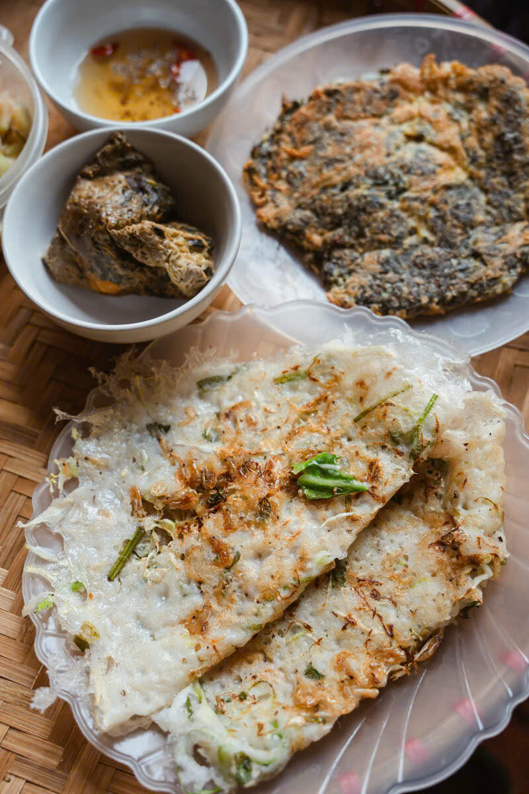
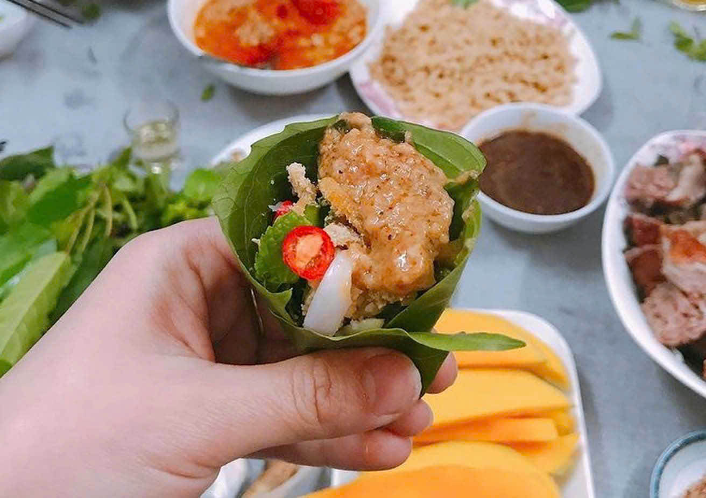
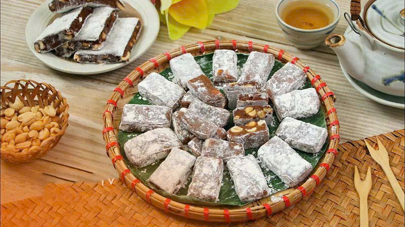
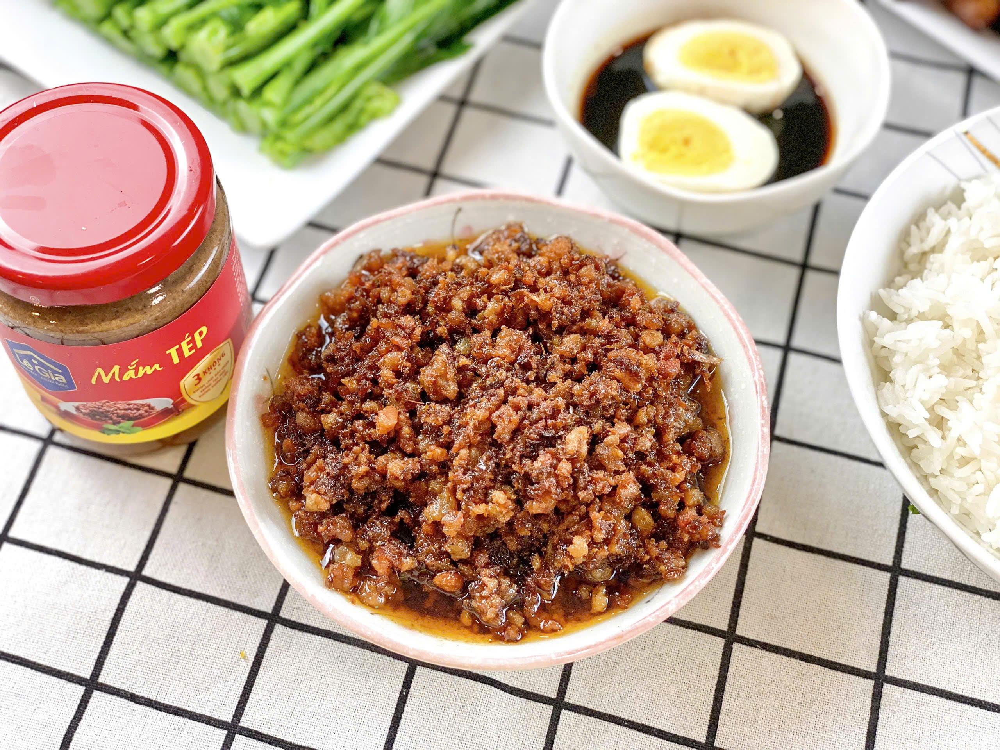
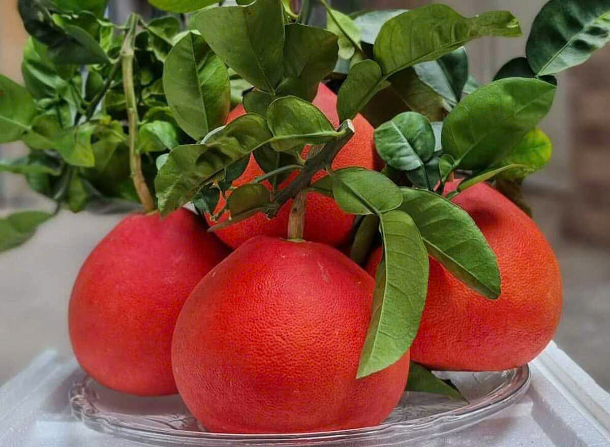
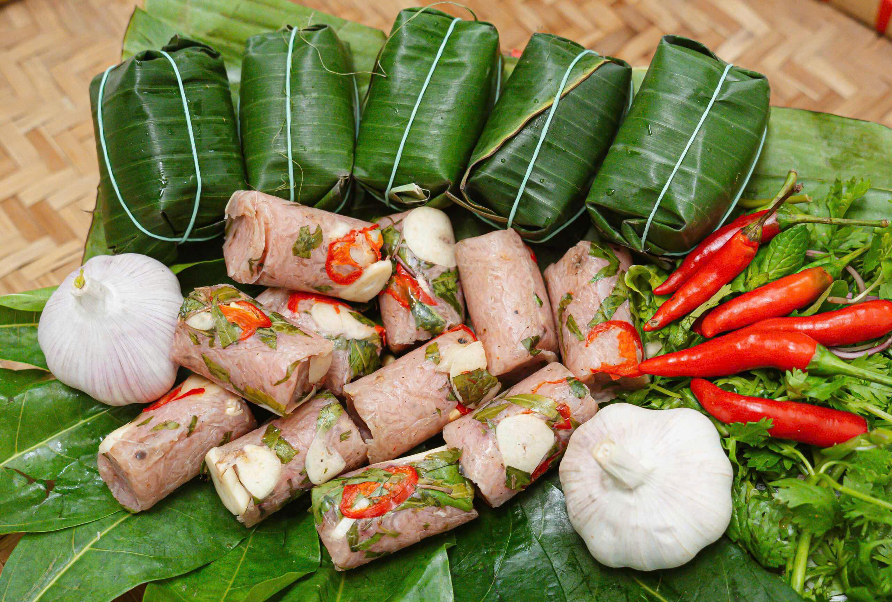
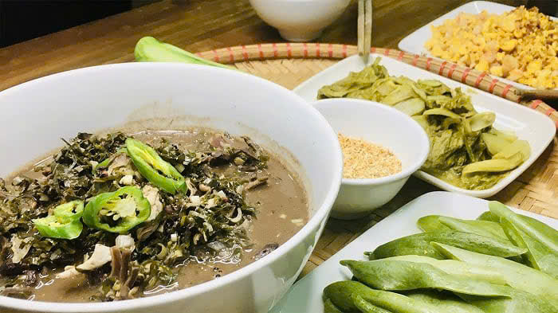
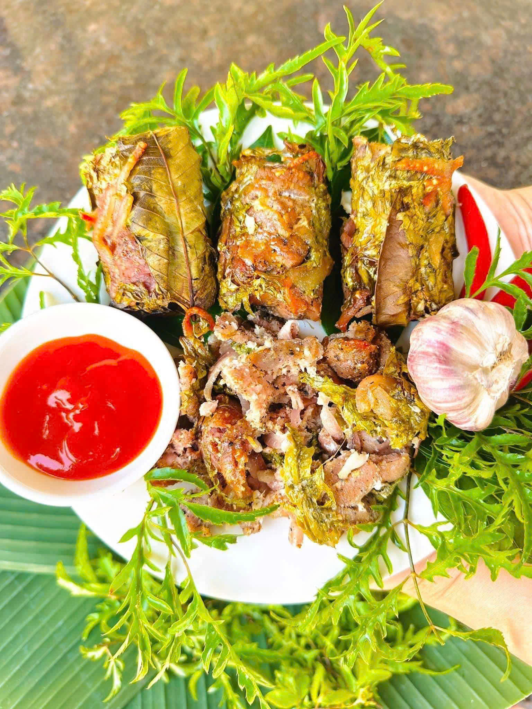
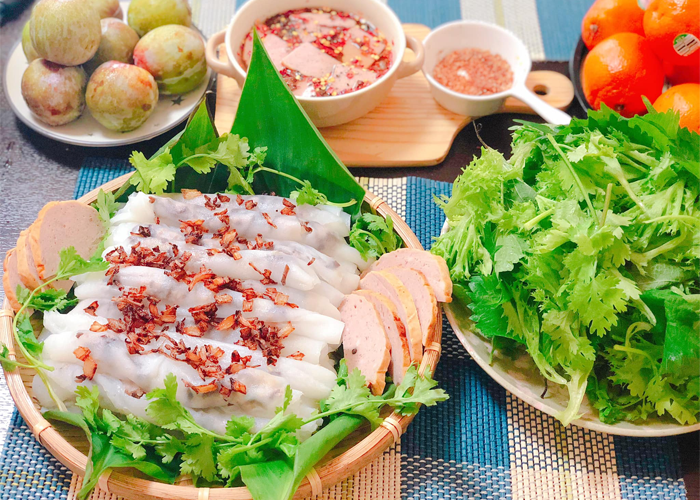
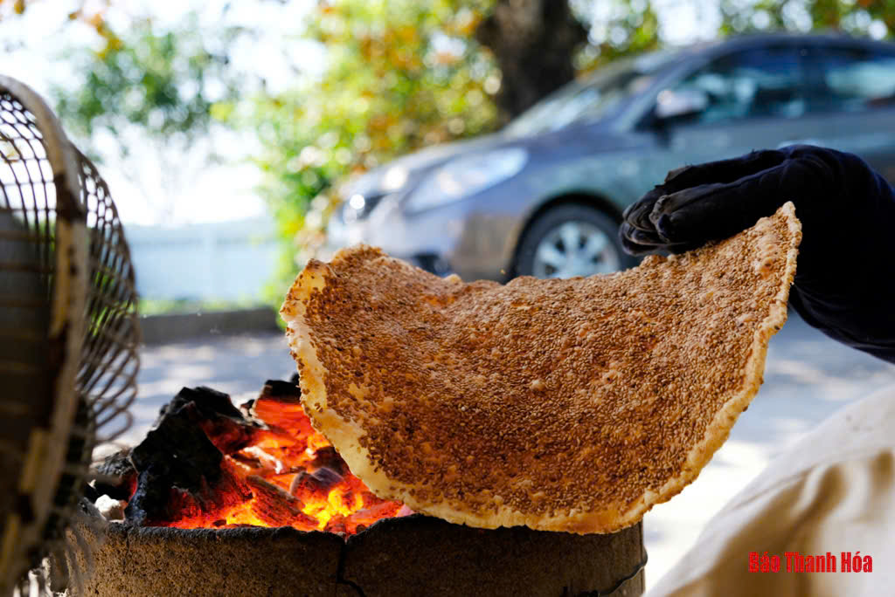

Thanh Hóa – vùng đất địa linh nhân kiệt nơi cửa ngõ Bắc Trung Bộ – là sự hội tụ hài hòa giữa chiều sâu lịch sử, vẻ đẹp thiên nhiên và bản sắc văn hóa đặc trưng. Chính truyền thống lâu đời ấy đã tạo nên nền ẩm thực xứ Thanh mộc mạc nhưng đậm đà, mang hương vị rất riêng.
Bánh khoái Thanh Hóa là món đặc sản đầu tiên mà bạn không nên bỏ lỡ khi đến mảnh đất này. Vị béo ngậy của bột gạo quyện cùng vị ngọt thanh của rau cần, bắp cải, vị bùi của tép đồng tươi tạo nên một hương vị độc đáo, càng ăn càng ghiền. Cắn một miếng bánh khoái giòn tan, bạn sẽ cảm nhận được trọn vẹn cái hồn của xứ Thanh.

Chẻo nhệch được làm từ cá nhệch. Đây cũng là một đặc sản xứ Thanh nức tiếng. Thay vì ăn gỏi cùng mắm tôm hay nước mắm thì ở Thanh Hoá, gỏi nhệch được ăn cùng với chẻo. Chẻo là phần xương cá được giã nhuyễn rồi chưng lên cùng mẻ chua và gia vị, có màu đỏ sậm, đặc sánh, thơm nức mũi. Gỏi cá được ăn cùng với lá chanh, lá sung, húng, tía tô. Cách ăn gỏi nhệch cũng hơi khác một chút. Bạn hãy lấy một chiếc lá sung, xếp lần lượt các loại rau khác như húng quế, mùi tàu, đinh lăng, rau má... Sau đó nhồi gỏi nhệch vào giữa, rưới chẻo lên trên, cuối cùng là rắc hành khô, gừng, ớt và thưởng thức. Vị chua, chát của rau, vị béo ngậy của chẻo cùng vị bùi bùi của gỏi cá chắc chắn sẽ khiến bạn phải thích thú không ngừng .

Một đặc sản Thanh Hoá nữa đến từ vùng đất Phủ Quảng là chè lam Thanh Hoá. Phủ Quảng là tên gọi cũ của huyện Vĩnh Lộc cũ, là vùng đất có món chè lam nức tiếng xa gần. Khác với chè lam nơi khác, chè lam Phủ Quảng có vị ngọt thanh, giòn tan nơi đầu lưỡi. Thanh chè lam màu vàng ươm đẹp mắt. Nếu vừa ăn chè lam vừa nhâm nhi chén trà xanh thì quả đúng là mỹ vị. Miếng chè lam giòn giòn xen lẫn vị ngọt dịu của mật mía và hương gừng cay, thêm chút chát của trà xanh, thật là một món quà quê giản dị mà ý nghĩa.

Mắm tép là món đặc sản Thanh Hoá mà hầu hết các du khách phải mê mẩn. Mắm tép được chế biến từ những con tép tươi được các ngư dân đánh bắt xa bờ. Sau khi làm sạch, tép được xay nhuyễn, ủ lên men cùng với thính. Mắm tép ăn đúng điệu là khi chưng chín với mỡ hành, đảo đều cùng thịt ba chỉ thái mỏng, ăn kèm cơm nóng. Ngày xưa, mắm tép lọt vào danh sách những món ăn dùng để tiến vua. Đến Thanh Hoá, đừng bỏ qua đặc sản Thanh Hoá này nhé.

Bưởi tiến vua là giống cây trồng đặc trưng của vùng đất Thọ Xương, Thanh Hoá. Quả bưởi khi còn xanh cũng có màu giống các loại bưởi khác, tuy nhiên khi chín, chúng sẽ chuyển dần sang màu đỏ. Bưởi có mùi thơm, mọng nước, vị ngọt, ăn rất ngon. Xưa kia, giống bưởi quý hiếm này được dùng để tiến vua bởi màu đỏ được cho rằng sẽ đem lại may mắn, thịnh vượng.

Nhắc đến Thanh Hóa thì nem chua chính là món đặc sản đầu tiên nổi tiếng được nhiều người biết đến. Nhờ cách chế biến rất riêng mà nem chua Thanh Hóa luôn dành được sự yêu thích của du khách. Nem được cuốn bằng nhiều lớp lá chuối khác nhau, phần thịt bên trong có màu hồng, được dùng lá ổi và ớt hiểm thái nhỏ, tiêu bỏ vào cùng. Khi ăn vào bạn sẽ thấy nem có vị chua nhẹ, giòn và rất cuốn hút, khiến bạn chỉ muốn ăn mãi không ngừng.

Đây là một món canh của người Mường rất nổi tiếng và cũng là một trong những món đặc sản Thanh Hóa nhất định bạn nên thử khi đến đây. Canh được nấu từ loại lá có cùng tên, là thon dài và thường mọc thành các chùm. Sau khi được hái sẽ đem nấu cùng lòng gà, hoặc lòng lợn, thịt nạc. Món canh mang vị đắng tê tê rất thu hút, sau một vài muỗng quen dần với hương vị thì chắc chắn bạn sẽ nghiện món ăn này bởi mùi vị mà nó mang lại đấy.

Nếu nem chua nổi tiếng thứ nhất, thì nem nướng Thanh Hóa sẽ là loại đặc sản nổi tiếng tiếp theo mà bạn không nên bỏ qua. Món ăn rất thơm và mang hương vị đặc trưng riêng, có nguồn gốc từ vùng đất Thọ Xuân. Nem được dùng thịt lợn, thính, bì và lá đinh lăng, gói trong lá chuối, sau vài ngày là có thể đem nem đi nướng và thưởng thức. Món nem này có hương vị chu chua nhẹ, xen lẫn vị ngọt từ bì lợn, cùng mùi thơm đặc trưng khó mà cưỡng lại.

Cũng là bánh cuốn nhưng tại Thanh Hóa bánh lại có hương vị rất riêng, mà không tỉnh thành nào có được. Phần bánh dai mềm vừa phải, nhân bánh được làm từ thịt nạc, mộc nhĩ rất thơm, sau khi bánh được tráng xong sẽ được phết một lớp hành phi băm nhỏ. Ăn cùng nước mắm được pha theo công thức riêng sẽ mang lại hương vị rất ấn tượng.

Bánh đa Minh Châu tại Thanh Hóa được làm ra từ bột gạo xay nhuyễn, sau đó bánh được tráng và thêm một chút mè đen để tạo mùi thơm, béo cho món ăn. Không chỉ có thể làm loại bánh ăn vặt, mà du khách có thể ăn bánh đa cùng nhiều món ăn khác như hến xào Sông Chu.

Chúng tôi rất mong nhận được ý kiến đóng góp của bạn để ẩm thực Thanh Hóa ngày càng được giới thiệu tốt hơn.